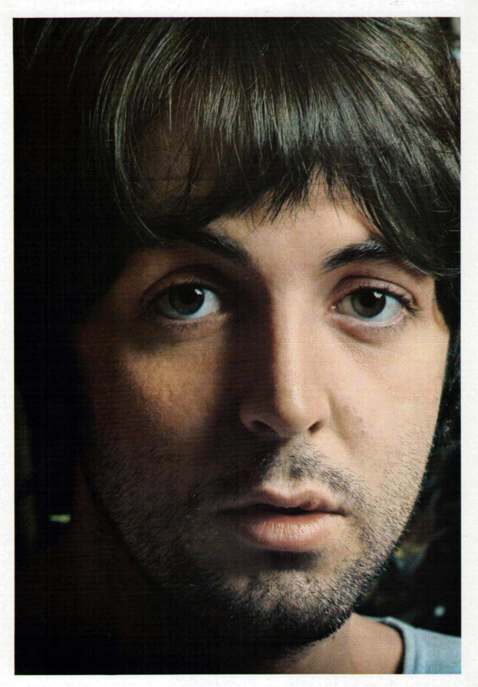
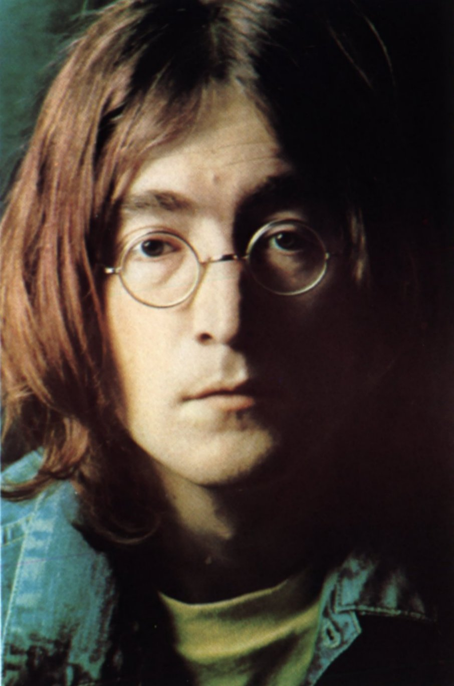
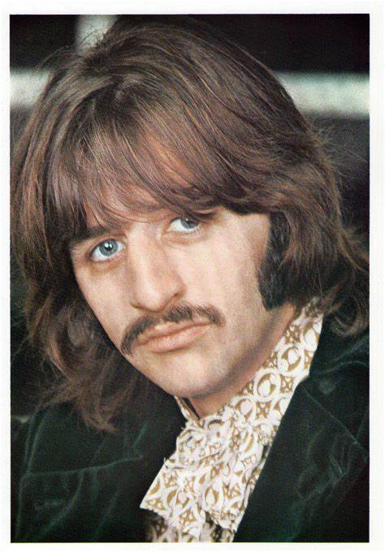
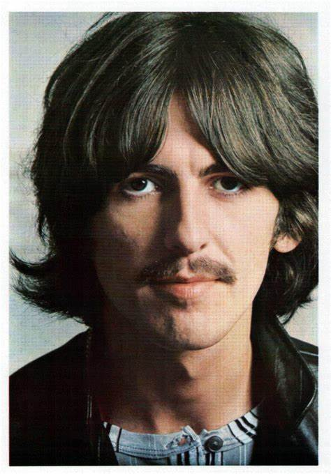

| Nome | Breve Biografia | Foto |
|---|---|---|
| Paul McCartney | Paul McCartney é um cantor, compositor e multi-instrumentista britânico, nascido em 18 de junho de 1942, em Liverpool, Inglaterra. Ele é mais conhecido por ser um dos membros fundadores da banda The Beatles. McCartney começou a tocar música ainda na infância, aprendendo a tocar piano, guitarra e baixo. Em 1957, ele conheceu John Lennon em uma festa de igreja, e os dois começaram a tocar juntos em bandas locais. Em 1960, eles formaram a banda The Beatles, juntamente com George Harrison e Ringo Starr. Com The Beatles, McCartney se tornou um dos compositores mais bem-sucedidos da história da música pop, escrevendo músicas como "Yesterday", "Let It Be" e "Hey Jude". Após a separação da banda em 1970, ele iniciou uma carreira solo de sucesso, lançando álbuns como "McCartney" e "Ram". Ao longo de sua carreira, McCartney ganhou inúmeros prêmios e honrarias, incluindo 18 Grammy Awards e uma indicação ao Oscar. Ele é considerado um dos músicos mais influentes da história da música e um ícone cultural em todo o mundo. |  |
| Jonh Lennon | John Lennon foi um músico, compositor e ativista britânico, nascido em Liverpool, Inglaterra, em 9 de outubro de 1940. Ele é mais conhecido por ser um dos membros fundadores da banda The Beatles. Lennon começou a tocar guitarra na adolescência e formou os Beatles com Paul McCartney, George Harrison e Ringo Starr em 1960. A banda se tornou uma das mais influentes e bem-sucedidas da história da música, com músicas como "Help!", "Yesterday" e "Let It Be". Após a separação dos Beatles em 1970, Lennon iniciou uma carreira solo igualmente bem-sucedida, lançando álbuns aclamados pela crítica como "Imagine" e "Mind Games". Ele também se envolveu em causas sociais e políticas, se tornando um defensor da paz e dos direitos humanos. Tragicamente, Lennon foi assassinado em Nova York em 8 de dezembro de 1980, aos 40 anos de idade. Sua morte foi um choque para o mundo da música e deixou um legado duradouro como um dos maiores músicos e líderes culturais do século XX. |  |
| Ringo Starr | Ringo Starr é um músico, cantor e ator britânico, nascido em 7 de julho de 1940, em Liverpool, Inglaterra. Ele é mais conhecido como o baterista da banda The Beatles. Starr começou a tocar bateria na adolescência, tocando em várias bandas antes de se juntar aos Beatles em 1962, substituindo Pete Best como baterista da banda. Ele trouxe sua energia característica e estilo de bateria único para o som dos Beatles, e se tornou uma figura importante da banda. Após a separação dos Beatles em 1970, Starr iniciou uma carreira solo de sucesso, lançando vários álbuns e singles populares. Ele também atuou em vários filmes, incluindo "Caveman" e "The Magic Christian". Starr é conhecido por seu carisma e senso de humor, e continua a se apresentar e gravar música até hoje. Ele é um ativista social e defensor da paz, e recebeu várias honras em reconhecimento a seus esforços humanitários, incluindo a nomeação como cavaleiro pela rainha Elizabeth II em 2018. |  |
| George Harrison | George Harrison foi um músico, compositor e produtor britânico, nascido em Liverpool, Inglaterra, em 25 de fevereiro de 1943. Ele é mais conhecido como um dos membros fundadores da lendária banda The Beatles. Harrison começou a tocar guitarra ainda na adolescência e se juntou aos Beatles em 1958. Ele trouxe uma nova dimensão ao som da banda com sua guitarra elétrica e sua habilidade como compositor, escrevendo várias músicas populares dos Beatles, incluindo "Here Comes the Sun" e "Something". Após a separação dos Beatles em 1970, Harrison lançou vários álbuns solo aclamados pela crítica, como "All Things Must Pass" e "Living in the Material World". Ele também colaborou com outros músicos de renome, incluindo Eric Clapton, Bob Dylan e Roy Orbison, como parte do supergrupo Traveling Wilburys. Harrison foi um defensor da espiritualidade e da meditação, influenciado pela cultura indiana, e incorporou essas ideias em sua música. Ele também foi um filantropo, ajudando a organizar o Concerto para Bangladesh em 1971 e apoiando outras causas humanitárias. Harrison faleceu em 29 de novembro de 2001, após uma longa batalha contra o câncer. Ele deixou um legado duradouro como um dos maiores músicos e compositores do século XX. |  |